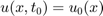
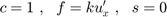
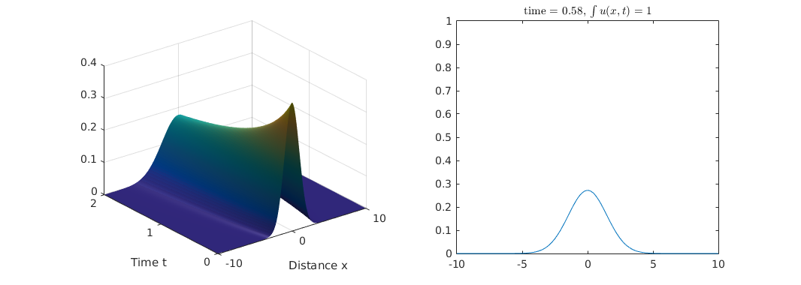
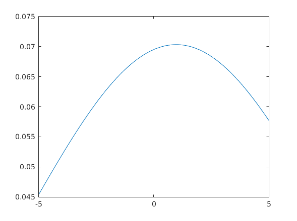

Contents
file: pde_heat_transfer_1D_v2.m author: Polcz Péter <ppolcz@gmail.com>
Created on 2016.12.07. Wednesday, 11:51:36 Reviewed on 2016.12.08. Thursday, 22:43:29
% fname: full path of the actual file pcz_cmd_fname('fname'); persist = pcz_persist(fname); %persist.backup();
Hővezetés egyenlete adott kezdeti feltétel mellett
k = 1; pde = @(x,t,u,DuDx) deal( 1 , k*DuDx , 0);
Initial condition: 
ic1 = @(x) exp(-x) * (1 + sign(x)) / 2;
bc = @(xl,ul,xr,ur,t) deal( ul, 0, ur , 0 ); x_lim1 = -5; x_lim2 = 10; m = 0; x = linspace(x_lim1,x_lim2,1000); t = linspace(0,0.1,201);

sol = pdepe(m,pde,ic1,bc,x,t); % Extract the first solution component as u. u = sol(:,:,1); fig = figure('Position', [165 540 1066 380], 'Color', 'white'); subplot(121), surf(x,t,u), light, shading interp xlabel('Distance x') ylabel('Time t') clear frames for i = 10 % 1:numel(t) subplot(222), u_ref = 0.5 * exp(k*t(i)-x) .* ... erfc((2*k*t(i) - x) / sqrt(4*k*t(i))); plot(x, [ u(i,:) ; u_ref ]); title(sprintf('time = %.4f, %s', t(i),... '$u(x,t) = 0.5 e^{kt-x}\,\mathrm{Erfc}\left(\frac{2 k t - x}{2 \sqrt{k t}}\right)$'), 'Interpreter', 'latex'), axis([-5, 5, 0, 1.5]); L = legend('numerikus megoldás 0-0 kezdeti feltételekkel',... 'analitikus megoldás végtelen hosszú rúd esetén'); L.FontSize = 8; subplot(224), plot(x,(u_ref - u(i,:))) L = legend('negyzetes hiba'); L.Location = 'southeast'; xlim([-5 5]) pause(0.1); % Felvétel % frames(i) = getframe(fig); end % v = VideoWriter(persist.simple('fig','heat_diffusion_1D_v2.avi')); % open(v) % writeVideo(v,frames) % close(v) % persist.savefig('heat_diffusion_1D_v3_poster.png')
Hővezetés egyenlete más kezdeti feltétel mellett
u'_t = k u''_{xx} ~,~~
u(x,0) = \left\{\begin{aligned}
&0 &&, \text{ ha } x < 0 \\
&e^{-x} &&, \text{ ha } x \ge 0
\end{aligned} \right.
sigma = 1; k = 1;
pde = @(x,t,u,DuDx) deal( 1 , k*DuDx , 0);
Initial condition:
ic2 = @(x) (sigma * sqrt(2*pi)) \ exp(-x.^2 / (2 * sigma^2));
bc = @(xl,ul,xr,ur,t) deal( ul, 0, ur , 0 ); x_lim = 10; m = 0; x = linspace(-x_lim,x_lim,1000); t = linspace(0,2,101); sol = pdepe(m,pde,ic2,bc,x,t); % Extract the first solution component as u. u = sol(:,:,1); figure('Position', [165 540 1066 380], 'Color', 'white'); % A surface plot is often a good way to study a solution. subplot(121), surf(x,t,u), light, shading interp xlabel('Distance x') ylabel('Time t') % zlim([0,10]) subplot(122), for i = 30 %1:numel(t) plot(x, u(i,:)); title(sprintf('time = %0.2f, $\\int u(x,t) = %g$', t(i), trapz(x, u(i,:))), 'Interpreter', 'latex'), axis([-x_lim, x_lim, 0, 1]) pause(0.1), end
k = 1; x = linspace(-5,5,1000); figure; for t = 20 %linspace(0.01,1,1000) e = erfc((2*k*t - x) / sqrt(4*k*t)); u = sqrt(pi) \ exp(k*t-x) .* e; plot(x,u) pause(0.1) end